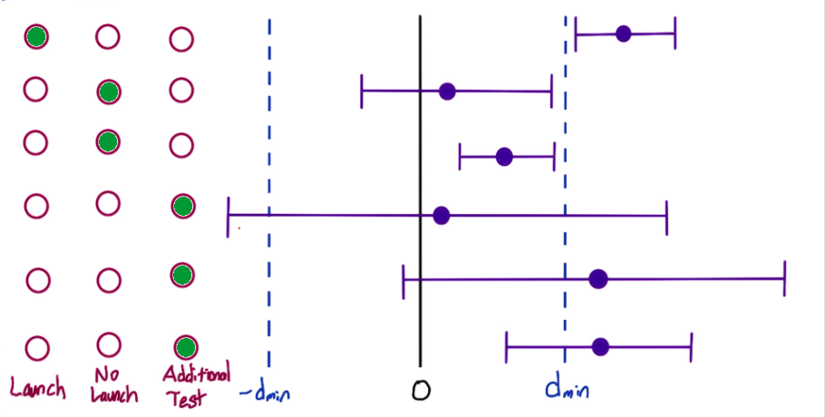

|  |
| 1° |
Confidence interval does not include zero, therefore the result is statistically significant \(\left( \neq 0\right)\) and also practically significant \(\left( \left| \cdot \right| > d_{min} \right)\) |
| 2° |
Case called neutral, there is no statistically significant chance from zero, since the confidence interval includes zero, and you're also confident that there is not a practically significant change |
| 3° |
The result is statistically significant but not practically significant, in fact you're confident that there was not a practically significant change |
| 4° |
One of the most difficult cases to handle, you have not enough power to draw conclusion. Run an additional test with greater power if possible |
| 5° |
Point estimate is beyond what is practically significant, meaning your best guess is that this change has an effect that you care about, but CI overlaps zero, so might not even be a change at all. Run a test with greater power if possible |
| 6° |
It is possible that change might not be practically significant. Run a test with greater power if possible |